アウカナ佛/栃木県
栃木県鹿沼市。園芸や盆栽が好きな方にとっては鹿沼土でおなじみの鹿沼、である。
レトロな街を散歩しているとこんな光景が…
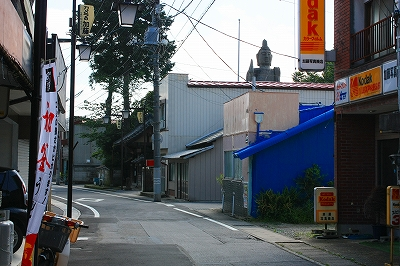
ああ、以前ワンダーJAPANで紹介されてた大仏さんだ。
これは見ておくべき！
お寺の名前は清林寺。早速境内にお邪魔する。
山門を潜るまでもなくドーンと立ってました。大仏さん。
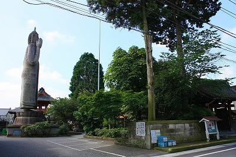
ご覧のとおり、エキゾチックな大仏さんである。
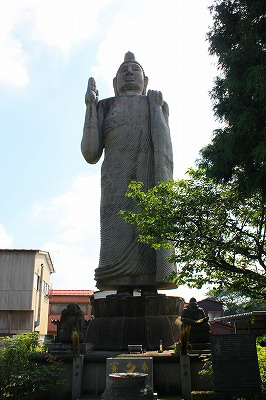
これはスリランカの有名なアウカナ佛を模した大仏さんである。
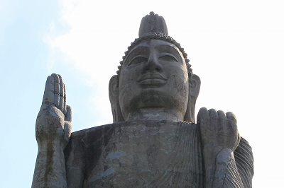
説明を見るとスリランカにある本物のアウカナ佛から型取りをして作ったとあるが…
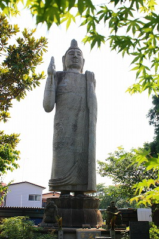 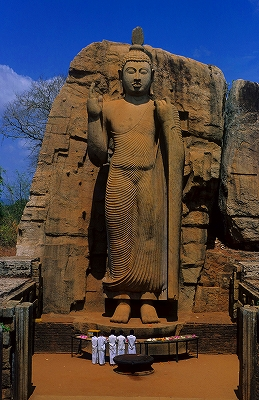
ハッキリ言って本家のアウカナ佛とは似て非なる造形である。
それでもスリランカの仏像の特徴をよくあらわした大仏さんだと思う。
スリランカの大仏事情はこちらを参考にしていただきたし。ただしアウカナには行かなかったけど。遠いんですよ…
このアウカナ佛、スリランカでは非常に重要な仏像で多くの観光パンフや絵葉書に登場している。
日本で言えば鎌倉の大仏や奈良の大仏、ついでに言えば富士山や清水寺みたいにＪＡＰＡＮというタイトルの絵葉書ってあるじゃないすか空港とか免税店とかに売ってるヤツ。あれに登場するレベルの大仏さんだということ。
そんなスリランカ国のアイコンでもあるアウカナ佛、実は当地でも結構レプリカ大仏がつくられているのだ。


スリランカの仏像の最大の特徴はこの細かいヒダヒダ。日本でいうところの清涼寺様式である。
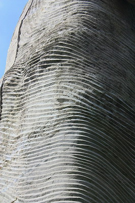
しかも体に密着してボディラインがくっきり現れる感じ。
本家アウカナ佛をもう一度ご覧いただきたい。
ホラ、静電気強すぎでお股の辺りがヤバいことになっちゃってるでしょ。エレガード、エレガード！
な、お股の辺りの処理は若干マイルドになってはいるものの、基本的なポーズは一緒。
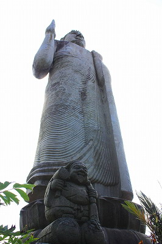
足元には恵比寿大黒さんが。
昭和63年、バブル真っ最中の建立である。
北関東にて花開く南アジアの至宝。
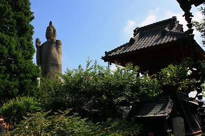
日本でスリランカの様式をトレースするのはなかなか難しかったようですね。
作者等詳細は判らないが、相当苦心したように見受けられる。
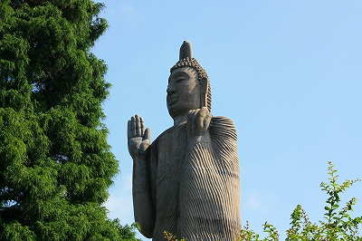
その苦心の痕跡を愛でるのが近現代大仏道の極意なり。
高さは台座込み19メートル。
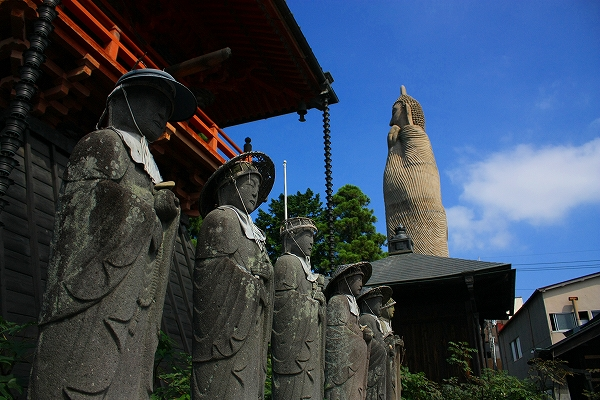
横に回ってみると寸胴気味でちょとカワイイ。
ボーリングのピンみたいだ。
このタイプの服はボディラインがクッキリするのでプロポーションに自信のある方がお召しになった方がよろしいかと。
傍らでジャパニーズスタイルの石仏さんも苦笑い。
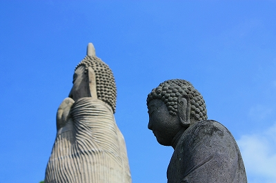
お隣には素敵なコンクリ仏も。
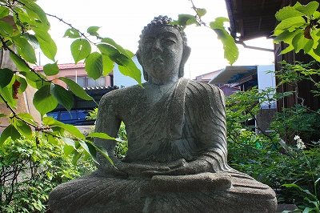
本堂の銭額。チョット螺髪を髣髴とさせているようないないような…
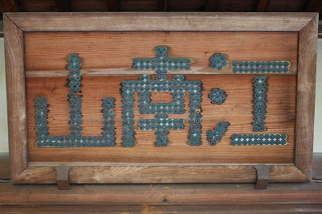
奥のほうには謎のドームがあった。
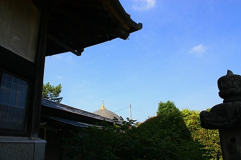
大仏さんの背後に回ってみる。そもそも岩壁に半身が彫られているので本家のアウカナ佛には後姿などないのである。
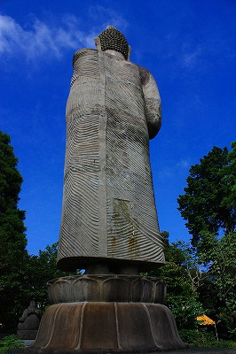
あ、二本足で立ってるのか。このサイズで二本足で直立しているのは蒲郡の子安弘法大師位のものではなかろうか。
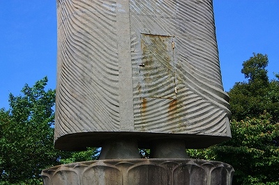
足元にはメンテ用の扉が付いていた。少しサビが出ているようですね…
本家のアウカナ佛の建立から1600年。
単純にこの二つの仏像を見比べれば造形力の優劣はいうにも及ばない。
しかし。
スリランカのアウカナ大仏は行く気もしなかったけど栃木のアウカナ佛は見て良かったと心底思ったことだけは確かだ。
だって面白いもん。
※本家アウカナ仏の画像はスリランカ航空ホームページより抜粋しました
2010.07.
珍寺大道場 HOME